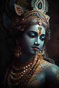

The Thalapathy of Tamil Cinema Vijay's journey to superstardom was not overnight. Through perseverance and consistent improvement, he rose to become a mass hero, known for his charisma, screen presence, dance skills, and action-packed performances. Movies like Ghilli, Thuppakki, Mersal, Master, and Leo solidified his image as a versatile and bankable actor. His recent films consistently break box office records, both in India and internationally. Beyond his film career, Vijay enjoys a massive and loyal fan base, often referred to as "Thalapathy fans."
